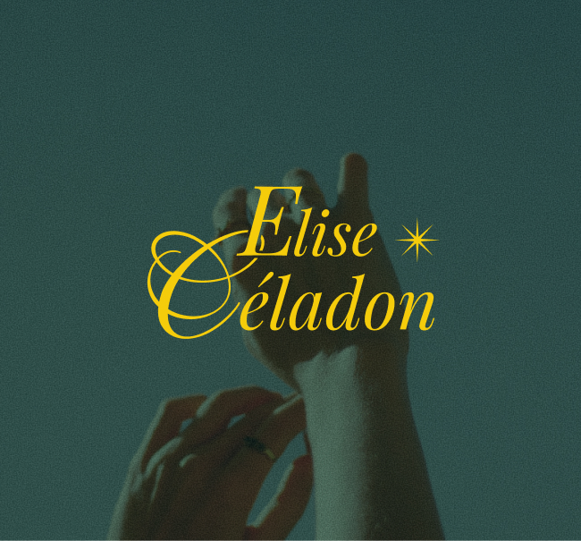
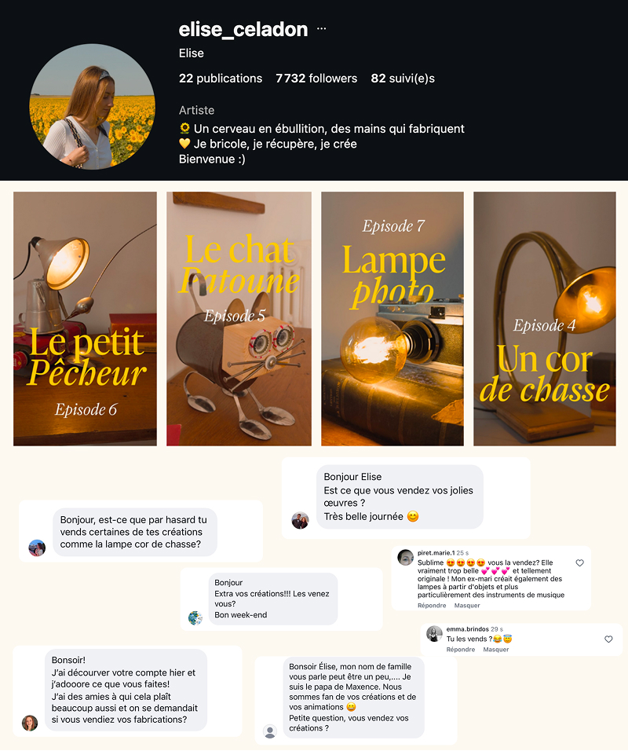
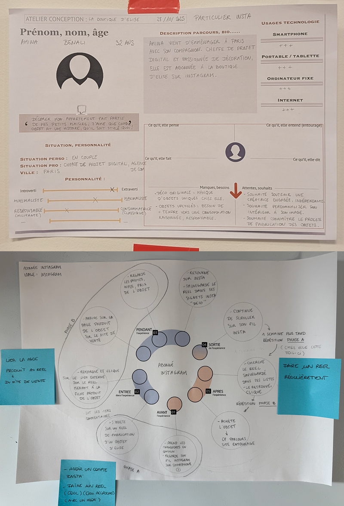

La boutique d'Elise
Recherche UX
Création du site de vente en ligne d’Elise, créatrice d’objets d’art upcyclés
2026
Voir le projetContexte
Elise crée des objets artisanaux upcyclés : elle chine des pièces en brocante et les transforme.
En été 2025, elle poste ses créations sur Instagram avec un reel par création pendant quelques jours. Son compte explose : il passe de 100 à 7000 abonnés.
Des personnes intéressées par ses créations lui écrivaient pour acheter, mais elle n'avait aucun moyen de vendre.
Ce besoin est devenu notre projet web de M2 : créer un site e-commerce pour Elise, avec un budget quasi nul, en un semestre. Elise était commanditaire et membre de l'équipe. Clara était chef de projet et designer.
→ J'étais en charge de la recherche utilisateur.
J'ai également assuré le développement du site sur WordPress et aidé à élaborer la direction artistique.

Design sprint, un démarrage en une semaine
Nous avons structuré le projet autour d'une semaine de design sprint pour cadrer rapidement le problème et aligner l'équipe sur la proposition de valeur, les besoins, les cibles, les contraintes.
Lors de ce cadrage nous avons réalisé un benchmark, un BMC, 3 parcours utilisateurs (CJM customer journey maps) liés à 3 personas : personne de l’entourage d’Elise, l’abonné Instagram d’Elise et le partenaire potentiel.
Pour une première version du site, nous nous sommes concentrées sur les deux premiers personas, le troisième étant moins vital au besoin primaire de la vente en ligne.

Tests utilisateurs
Suite à cette semaine, j’ai pu concevoir le protocole de tests utilisateurs en rédigeant le guide d’entretien.
J’ai ensuite animé des sessions en présentiel auprès de 7 participants : 3 répondants de l’entourage d'Élise, 3 répondants abonnés Instagram et 1 répondant avec un profil externe. Enfin, j’ai mis à plat et analysé les entretiens.
Voir l’analyse des tests utilisateursCe que j'en retiens
Travailler sur ce projet a été une vraie source de motivation car c'était un cas concret, guidé par de réels besoins.
J’ai trouvé très intéressant de découvrir l’écosystème de l’artisanat, de l'upcycling et des créateurs indépendants, ainsi que les mécaniques de pensée qui motivent (ou non) un utilisateur à acheter.
En outre, cette expérience a confirmé mon intérêt pour la recherche utilisateur 💫